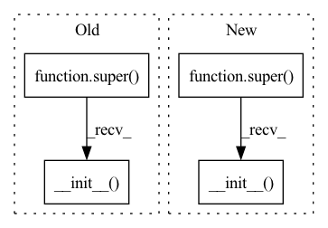

Pattern ID :445

Before Change
:param nb_predict_step:
"""
super(MSTGCN_submodule, self).__init__()
self.BlockList = nn.ModuleList([MSTGCN_block(in_channels, K, nb_chev_filter, nb_time_filter, time_strides, cheb_polynomials)])
self.BlockList.extend([MSTGCN_block(nb_time_filter, K, nb_chev_filter, nb_time_filter, 1, cheb_polynomials) for _ in range(nb_block-1)])
After Change
def __init__(self, DEVICE, nb_block, in_channels, K, nb_chev_filter, nb_time_filter, time_strides, num_for_predict, len_input, edge_index):
super(MSTGCN, self).__init__()
self.BlockList = nn.ModuleList([MSTGCN_block(in_channels, K, nb_chev_filter, nb_time_filter, time_strides, edge_index, DEVICE)])
self.BlockList.extend([MSTGCN_block(nb_time_filter, K, nb_chev_filter, nb_time_filter, 1, edge_index, DEVICE) for _ in range(nb_block-1)])
In pattern: SUPERPATTERN
Frequency: 23
Non-data size: 4
Instances
Fragment ID: 1312532
Project Name: benedekrozemberczki/pytorch_geometric_temporal
Commit Name: 0d500e14e45562d77ff50390b54982e0a92e64eb
Time: 2021-03-17
Author: He_YX@outlook.com
File Name: torch_geometric_temporal/nn/convolutional/mstgcn.py
M Class Name: MSTGCN
N Class Name: MSTGCN_submodule
M Method Name: __init__(11)
N Method Name: __init__(11)
M Parent Class: nn.Module
N Parent Class: nn.Module
M File Name: torch_geometric_temporal/nn/convolutional/mstgcn.py
N File Name: torch_geometric_temporal/nn/convolutional/mstgcn.py
M Start Line: 102
M End Line: 114
N Start Line: 130
N End Line: 136
Fragment ID: 1312533
Project Name: microsoft/qlib
Commit Name: a51dafcb4cd84aa42514c61419691a0573ee3718
Time: 2021-03-14
Author: 280835372@qq.com
File Name: qlib/contrib/model/pytorch_tabnet.py
M Class Name: TabNet_Decoder
N Class Name: TabNet_Decoder
M Method Name: __init__(7)
N Method Name: __init__(7)
M Parent Class: nn.Module
N Parent Class: nn.Module
M File Name: qlib/contrib/model/pytorch_tabnet.py
N File Name: qlib/contrib/model/pytorch_tabnet.py
M Start Line: 426
M End Line: 426
N Start Line: 425
N End Line: 425
Fragment ID: 1312534
Project Name: datawhalechina/dive-into-cv-pytorch
Commit Name: 96282d9674a865a7cb9696c690d77d10ec494998
Time: 2020-05-22
Author: qiangzibro@gmail.com
File Name: beginner/chapter02_image_classification_introduction/2.2_introduction_of_image_classification/2.2.2_classical_cnn_models/ResNet/ResNet.py
M Class Name: ResidualBlock
N Class Name: Residual
M Method Name: __init__(5)
N Method Name: __init__(5)
M Parent Class: nn.Module
N Parent Class: nn.Module
M File Name: beginner/chapter02_image_classification_introduction/2.2_introduction_of_image_classification/2.2.2_classical_cnn_models/ResNet/ResNet.py
N File Name: beginner/chapter02_image_classification_introduction/2.2_introduction_of_image_classification/2.2.2_classical_cnn_models/ResNet/ResNet.py
M Start Line: 33
M End Line: 45
N Start Line: 50
N End Line: 58
Fragment ID: 1312528
Project Name: decile-team/cords
Commit Name: 8e7f9f1d840988cde6e0b5035ab6f9ba404f5485
Time: 2021-03-25
Author: krishnatejakillamsetty@gmail.com
File Name: cords/utils/models/mobilenetv2tf.py
M Class Name: BaseBlock
N Class Name: LinearBottleneck
M Method Name: __init__(5)
N Method Name: __init__(6)
M Parent Class: nn.Module
N Parent Class: nn.Module
M File Name: cords/utils/models/mobilenetv2tf.py
N File Name: cords/utils/models/mobilenetv2tf.py
M Start Line: 30
M End Line: 43
N Start Line: 10
N End Line: 34
Fragment ID: 1312560
Project Name: tmdt-buw/karolos
Commit Name: e52d81127a965c7310bbce3f80dfda7aa7549561
Time: 2020-03-15
Author: scheiderer@uni-wuppertal.de
File Name: agents/nnfactory/sac.py
M Class Name: Critic
N Class Name: SoftQNetwork
M Method Name: __init__(5)
N Method Name: __init__(6)
M Parent Class: nn.Module
N Parent Class: nn.Module
M File Name: agents/nnfactory/sac.py
N File Name: agents/nnfactory/sac.py
M Start Line: 29
M End Line: 50
N Start Line: 35
N End Line: 54
Fragment ID: 1312529
Project Name: woodywff/nas_3d_unet
Commit Name: 6d4490b0ee7ae3e66417976e31b690bb6f734c7e
Time: 2020-03-11
Author: woodywff@aliyun.com
File Name: cell.py
M Class Name: MixedOp
N Class Name: MixedOp
M Method Name: __init__(4)
N Method Name: __init__(4)
M Parent Class: nn.Module
N Parent Class: nn.Module
M File Name: cell.py
N File Name: cell.py
M Start Line: 11
M End Line: 11
N Start Line: 13
N End Line: 13
Fragment ID: 1312530
Project Name: eora-ai/torchok
Commit Name: 5ad3b3a9b4dd3d0f1cf0e645b0679d7aca8ac73c
Time: 2022-07-20
Author: rashit.bayazitov.1995@gmail.co
File Name: src/models/modules/blocks/drop.py
M Class Name: DropPath
N Class Name: DropPath
M Method Name: __init__(3)
N Method Name: __init__(3)
M Parent Class: nn.Module
N Parent Class: nn.Module
M File Name: src/models/modules/blocks/drop.py
N File Name: src/models/modules/blocks/drop.py
M Start Line: 34
M End Line: 34
N Start Line: 47
N End Line: 47
Fragment ID: 1312541
Project Name: coqui-ai/tts
Commit Name: fede46e96e4a0f9e7d919c0e869b3c06339cf4b8
Time: 2021-01-06
Author: erogol@hotmail.com
File Name: TTS/tts/layers/speedy_speech/encoder.py
M Class Name: PositionalEncoding
N Class Name: PositionalEncoding
M Method Name: __init__(4)
N Method Name: __init__(4)
M Parent Class: nn.Module
N Parent Class: nn.Module
M File Name: TTS/tts/layers/speedy_speech/encoder.py
N File Name: TTS/tts/layers/speedy_speech/encoder.py
M Start Line: 30
M End Line: 30
N Start Line: 20
N End Line: 20
Fragment ID: 1312542
Project Name: tuttelikz/farabio
Commit Name: 1e781dfbb0f4b2a6cae790f04cab2d6c8a4074bc
Time: 2021-05-10
Author: s.askaruly@gmail.com
File Name: farabio/models/classification/arch/resnext.py
M Class Name: Block
N Class Name: ResNeXtBottleneck
M Method Name: __init__(5)
N Method Name: __init__(6)
M Parent Class: nn.Module
N Parent Class: nn.Module
M File Name: farabio/models/classification/arch/resnext.py
N File Name: farabio/models/classification/arch/resnext.py
M Start Line: 12
M End Line: 40
N Start Line: 14
N End Line: 31
Fragment ID: 1312537
Project Name: hasnainraz/fast-aginggan
Commit Name: 9143dd8103c15fb84102fec0102ce1515087946f
Time: 2020-06-12
Author: hasnain3257@gmail.com
File Name: models.py
M Class Name: FastGenerator
N Class Name: Generator
M Method Name: __init__(3)
N Method Name: __init__(3)
M Parent Class: nn.Module
N Parent Class: nn.Module
M File Name: models.py
N File Name: models.py
M Start Line: 8
M End Line: 59
N Start Line: 91
N End Line: 138
Fragment ID: 1312539
Project Name: tvs-ai/pytorch_rppgs
Commit Name: d661a9c587676745f7ee0702c4a1dd2e1d4692f6
Time: 2022-12-29
Author: 57242033+najy97@users.noreply.github.com
File Name: vid2bp/nets/modules/MultiResUNet1D.py
M Class Name: MultiResBlock
N Class Name: Respath
M Method Name: __init__(4)
N Method Name: __init__(4)
M Parent Class: nn.Module
N Parent Class: nn.Module
M File Name: vid2bp/nets/modules/MultiResUNet1D.py
N File Name: vid2bp/nets/modules/MultiResUNet1D.py
M Start Line: 74
M End Line: 94
N Start Line: 24
N End Line: 35
Fragment ID: 1312516
Project Name: decile-team/cords
Commit Name: 798af04c991257c652c388af7a1fc4964c7f4f6a
Time: 2021-02-08
Author: krishnateja.killamsetty@utdallas.edu
File Name: cords/utils/models/resnet164.py
M Class Name: ResNet_Cifar
N Class Name: ResNet
M Method Name: __init__(4)
N Method Name: __init__(4)
M Parent Class: nn.Module
N Parent Class: nn.Module
M File Name: cords/utils/models/resnet164.py
N File Name: cords/utils/models/resnet164.py
M Start Line: 62
M End Line: 85
N Start Line: 163
N End Line: 182
Fragment ID: 1312548
Project Name: tmdt-buw/karolos
Commit Name: e52d81127a965c7310bbce3f80dfda7aa7549561
Time: 2020-03-15
Author: scheiderer@uni-wuppertal.de
File Name: agents/nnfactory/sac.py
M Class Name: Policy
N Class Name: PolicyNet
M Method Name: __init__(8)
N Method Name: __init__(9)
M Parent Class: nn.Module
N Parent Class: nn.Module
M File Name: agents/nnfactory/sac.py
N File Name: agents/nnfactory/sac.py
M Start Line: 60
M End Line: 92
N Start Line: 66
N End Line: 88
Fragment ID: 1312518
Project Name: josejimenezluna/delfta
Commit Name: 667f7dd83d60f5e358685babcf22cce13433447e
Time: 2021-06-10
Author: hawk31@gmail.com
File Name: delfta/net.py
M Class Name: EGNN
N Class Name: DeltaNetAtomic
M Method Name: __init__(11)
N Method Name: __init__(10)
M Parent Class: nn.Module
N Parent Class: nn.Module
M File Name: delfta/net.py
N File Name: delfta/net.py
M Start Line: 125
M End Line: 163
N Start Line: 22
N End Line: 105
Fragment ID: 1312550
Project Name: hasai666/rec_pangu
Commit Name: b4c474a4e4daeac004424837904667890f10ff46
Time: 2023-03-20
Author: wangkai@fuzhi.ai
File Name: rec_pangu/models/layers/embedding.py
M Class Name: EmbeddingLayer
N Class Name: EmbeddingLayer
M Method Name: __init__(3)
N Method Name: __init__(3)
M Parent Class: nn.Module
N Parent Class: nn.Module
M File Name: rec_pangu/models/layers/embedding.py
N File Name: rec_pangu/models/layers/embedding.py
M Start Line: 11
M End Line: 26
N Start Line: 11
N End Line: 20
Fragment ID: 1312545
Project Name: tvs-ai/pytorch_rppgs
Commit Name: d661a9c587676745f7ee0702c4a1dd2e1d4692f6
Time: 2022-12-29
Author: 57242033+najy97@users.noreply.github.com
File Name: vid2bp/nets/modules/MultiResUNet1D.py
M Class Name: conv2d_bn
N Class Name: Conv2d_batchnorm
M Method Name: __init__(9)
N Method Name: __init__(7)
M Parent Class: nn.Module
N Parent Class: nn.Module
M File Name: vid2bp/nets/modules/MultiResUNet1D.py
N File Name: vid2bp/nets/modules/MultiResUNet1D.py
M Start Line: 47
M End Line: 62
N Start Line: 6
N End Line: 18
Fragment ID: 1312546
Project Name: x35f/unstable_baselines
Commit Name: cb80fe1d2c6b81d1d9c2862994979e3954043e53
Time: 2021-11-21
Author: 1621322691@qq.com
File Name: common/networks.py
M Class Name: MLPNetwork
N Class Name: VNetwork
M Method Name: __init__(6)
N Method Name: __init__(6)
M Parent Class: nn.Module
N Parent Class: nn.Module
M File Name: common/networks.py
N File Name: common/networks.py
M Start Line: 72
M End Line: 73
N Start Line: 48
N End Line: 49
Fragment ID: 1312515
Project Name: ygzwqzd/lamda-ssl
Commit Name: 360768e49da2ff10157493a976817acc85f1ccd5
Time: 2022-01-17
Author: 1129198222@qq.com
File Name: Semi_sklearn/Network/ResNet.py
M Class Name: ResNeXtBottleneck
N Class Name: Bottleneck
M Method Name: __init__(7)
N Method Name: __init__(9)
M Parent Class: nn.Module
N Parent Class: nn.Module
M File Name: Semi_sklearn/Network/ResNet.py
N File Name: Semi_sklearn/Network/ResNet.py
M Start Line: 76
M End Line: 99
N Start Line: 31
N End Line: 68
Fragment ID: 1312524
Project Name: benedekrozemberczki/pytorch_geometric_temporal
Commit Name: 2775ce5253580a592becb764f1a76d82c8e76e6e
Time: 2021-03-17
Author: He_YX@outlook.com
File Name: torch_geometric_temporal/nn/convolutional/astgcn.py
M Class Name: ASTGCN
N Class Name: ASTGCN_submodule
M Method Name: __init__(12)
N Method Name: __init__(12)
M Parent Class: nn.Module
N Parent Class: nn.Module
M File Name: torch_geometric_temporal/nn/convolutional/astgcn.py
N File Name: torch_geometric_temporal/nn/convolutional/astgcn.py
M Start Line: 204
M End Line: 204
N Start Line: 224
N End Line: 224
Fragment ID: 1312526
Project Name: casualganpapers/make-a-scene
Commit Name: 10fa280f06db134aa46da10928c643e44a737aa2
Time: 2022-05-26
Author: 61938694+dome272@users.noreply.github.com
File Name: losses/face_loss.py
M Class Name: FaceLoss
N Class Name: ResNet
M Method Name: __init__(1)
N Method Name: __init__(3)
M Parent Class: nn.Module
N Parent Class: nn.Module
M File Name: losses/face_loss.py
N File Name: losses/face_loss.py
M Start Line: 95
M End Line: 97
N Start Line: 56
N End Line: 58
Fragment ID: 1312558
Project Name: vlsomers/bpbreid
Commit Name: 710b9ac1a28d418bddc41aeeda320ab4de4d17fe
Time: 2018-10-26
Author: k.zhou@qmul.ac.uk
File Name: torchreid/models/resnet.py
M Class Name: ResNet
N Class Name: ResNet50M
M Method Name: __init__(7)
N Method Name: __init__(3)
M Parent Class: nn.Module
N Parent Class: nn.Module
M File Name: torchreid/models/resnet.py
N File Name: torchreid/models/resnet.py
M Start Line: 71
M End Line: 84
N Start Line: 107
N End Line: 130
Fragment ID: 1312520
Project Name: nvidia-merlin/transformers4rec
Commit Name: 58b4bf9dfdc2fe5ce6c90ac57f4db71224268942
Time: 2021-02-19
Author: gmoreira@nvidia.com
File Name: codes/loss_functions.py
M Class Name: BPR
N Class Name: TOP1_max_reg
M Method Name: __init__(1)
N Method Name: __init__(2)
M Parent Class: nn.Module
N Parent Class: nn.Module
M File Name: codes/loss_functions.py
N File Name: codes/loss_functions.py
M Start Line: 103
M End Line: 109
N Start Line: 18
N End Line: 18
Fragment ID: 1312554
Project Name: deci-ai/super-gradients
Commit Name: 98083d4303f887cb29f39029871612fe5e2e4753
Time: 2022-11-02
Author: 88616312+lkdci@users.noreply.github.com
File Name: src/super_gradients/training/models/segmentation_models/stdc.py
M Class Name: STDCBlock
N Class Name: STDCBlock
M Method Name: __init__(6)
N Method Name: __init__(5)
M Parent Class: nn.Module
N Parent Class: nn.Module
M File Name: src/super_gradients/training/models/segmentation_models/stdc.py
N File Name: src/super_gradients/training/models/segmentation_models/stdc.py
M Start Line: 34
M End Line: 43
N Start Line: 29
N End Line: 53